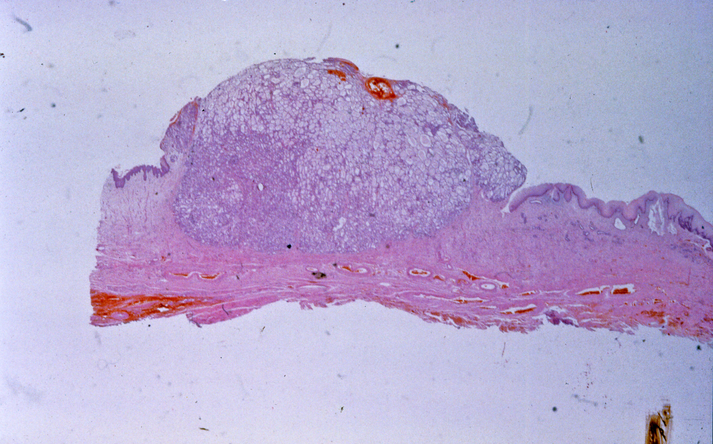

Vesicovaginal Fistulas
Joan Ngwuta
Spring 2012

One of the most devastating urological diseases, vesicovaginal fistula
(VVF), results from contact between the urinary bladder and the vagina.
Patients with this condition are unable to control the flow of urine.
Such an issue causes stigmatization and psychological devastation of
patients.
VVF is not common in the United States, but it is
more prevalent in the developing world. According to Mary Garthwaite
and Neil Harris of the Department of Urology at Leeds Teaching
Hospitals of the UK, in West Africa, 3 in 100,000 child deliveries lead
to VVF. One of the major causes, obstructed or protracted labor, can
either be the result of immaturity of the vaginal opening of the female
in question for a natural birth process, or inadequate prenatal care,
leading to using quack native doctors who are not formally trained to
perform C-sections. When there is a protracted or prolonged push
against the pelvis during labor by the unborn child, blood flow to the
vesicovaginal wall is obstructed, which could lead to tissue necrosis,
or death, and subsequent development of a hole between the bladder and
the vagina ten days after. Additionally, female genital mutilation or
circumcision may also lead to this disease.
Surgical procedures are the key to fixing this
damage. They are either done transabdominally or transvaginally, with
the latter being the most recommended. Both methods aim to identify the
fistula, excise it, and create conditions for the injured vaginal and
bladder layers to close up.
Although VVF is rare in the United States and since
it results mainly from the natural birth process, it is still possible
that it could occur. Should it occur, patients will typically have
great access to health professionals and services. One major issue in
developing countries in treating VVF is the limited access to proper
treatment and the lack of financial resources. However, some
precautionary measures supported by UNICEF to avert this disease in
developing countries include providing aid to victims and discouraging
female circumcision.
About the Author
Joan Ngwuta, class of 2013, is a Molecular Cell Biology major with an emphasis on Infectious Diseases.